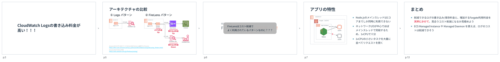
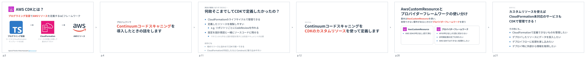
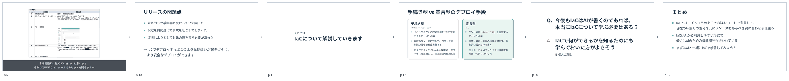
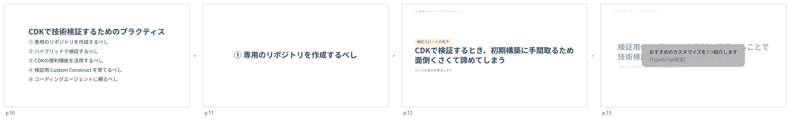
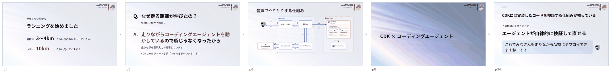

テーマ
デッキ全体が「どんな話か」の型。スライドを作ると決まった時点で決まっている。テーマが パターン（背骨）と、主役になる テンプレート を選ぶ。
- テーマの分け方と各テーマのデッキは、本人が挙げた候補（2026-11-18）
- 各テーマの背骨と主役のページは、そのテーマのデッキで実際に使っている型から読み取った。本人の記録で決まったものではないので、デッキを作りながら直してよい
- どのテーマも 共通の骨組み（表紙 → 自己紹介 → 導入 → 本編 → まとめ →（宣伝）→ Thank You）の上に乗る
| 見本 | 名前 | 説明 |
|---|---|---|
 | 検証してみた系theme-verification | 何かを実際に試して、測った結果や分かったことを見せる話 背骨: 分析 → 改善 → 振り返り。導入では困りごとを言い切る（failed-ecs「CloudWatch Logsの書き込み料金が高い！！！」） 主役: 困りごとの 言い切り、使うものの 「〜とは？」、構成や測った結果の 図＋結論、締めの まとめ（言い切り） |
 | 解説系theme-explainer | サービスや仕組み、考え方を説明する話 背骨: 定義に戻りながら進める、疑問を湧かせてから解消する 主役: 「〜とは？」（図示型）、定義の使い回し、箇条書き＋結論、2つを並べて比べる |
 | 入門・紹介系theme-intro | 初めての人に、技術を紹介して入口に立ってもらう話 背骨: 困りごと → 解決策。部がいくつかあるので 部の頭に導入の紙芝居 も使う 主役: 導入の ストーリー型、部の 章扉、特徴・理由を1つずつ、2つを並べて比べる、Q&A、まとめ（箇条書き） |
 | プラクティス紹介系theme-practice | いくつかのやり方（プラクティス）を、1つずつ紹介する話 背骨: お悩みを1つずつ解決 主役: プラクティスごとの 章扉（「① 〜するべし」）、お悩み → 解決 |
 | 体験談系theme-experience | 自分がやってきたこと・作ったものの体験を話す 背骨: 部の頭に導入の紙芝居 主役: 導入の 紙芝居型、仕組みの 図＋結論、Q&A、まとめ（箇条書き） |
候補に挙がっていないデッキ:
- cdkd-talk（「AWS CDKを理解するために公式の定義を深掘って解説してみる」）は、題名と 定義に戻りながら進める の元になったデッキなので、解説系として扱う
- cdk-3min（「AWS CDK 3分クッキング」）はデモが中心で、どのテーマにも入れていない
- cdk-day1 は、題名は技術検証の話で、組み方はプラクティス紹介。候補どおり両方に入れた